Quelques algorithmes de Machine Learning#
Pourquoi ce chapitre ?#
Il existe des centaines d’algorithmes de machine learning, chacun avec ses forces, ses faiblesses et ses cas d’usage. Ce chapitre n’a pas pour but d’être exhaustif (ce serait un cours entier), mais de vous donner une carte mentale des algorithmes les plus importants — ceux qu’on rencontre tous les jours en data science.
L’analogie à garder en tête : imaginez la boîte à outils d’un menuisier. Il n’utilise pas un marteau pour tout. Il a une scie pour couper, une ponceuse pour lisser, une perceuse pour percer… Chaque outil est adapté à un usage précis. En ML, c’est pareil : il n’y a pas d’algorithme universellement meilleur, il y a des algorithmes bien adaptés à des situations. Ce chapitre vous aide à savoir quel outil sortir de la boîte selon le problème.
Pour chaque algorithme, on va répondre à 3 questions :
Quelle est l’idée intuitive ? (le mental model en une phrase)
Quand l’utiliser ? (les cas d’usage typiques)
Quels sont ses pièges ? (ce qu’il faut savoir avant de l’essayer)
Régression linéaire#
L’idée intuitive#
La régression linéaire cherche à tracer une droite (ou un plan en plus de 2 dimensions) qui passe « au mieux » au milieu des données. Une fois la droite trouvée, on peut prédire la valeur de \(y\) pour un nouveau \(x\) en lisant sur la droite.
L’analogie à garder en tête : un comptable qui veut estimer le prix d’un appartement à partir de sa superficie. Il regarde les ventes passées, repère la tendance « +1 m² ≈ +5 000 € » et s’en sert pour estimer un nouveau bien. C’est exactement ce que fait la régression linéaire — en plus précis et en plusieurs dimensions.
La formule#
En 2 dimensions :
Décodage :
\(x\) est la variable d’entrée (la superficie).
\(y\) est la variable à prédire (le prix).
\(a\) est la pente de la droite (« de combien \(y\) augmente quand \(x\) augmente de 1 », soit le prix au m²).
\(b\) est l”ordonnée à l’origine (« la valeur de \(y\) quand \(x = 0\) », soit un offset).
L’algorithme d’apprentissage cherche les valeurs optimales de \(a\) et \(b\) à partir des données. C’est un modèle paramétrique : tout ce que le modèle « sait », c’est ces quelques paramètres.
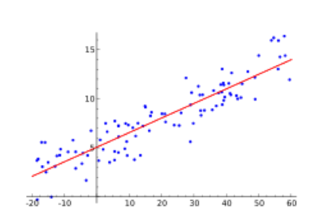
Forces et faiblesses#
✅ Simple, rapide, interprétable. On peut expliquer la prédiction à un client métier en 2 phrases.
✅ Prédiction très rapide (juste un produit scalaire).
⚠️ Ne capture que des relations linéaires. Si le vrai lien entre \(x\) et \(y\) est une parabole, une exponentielle ou quelque chose de complexe, la régression linéaire passera à côté.
⚠️ Sensible aux outliers : quelques points aberrants peuvent tirer la droite dans une mauvaise direction.
L’algorithme de base — OLS (Ordinary Least Squares)#
L’idée : trouver \(a\) et \(b\) qui minimisent la somme des carrés des écarts entre les vraies valeurs et celles prédites par la droite.
Pourquoi les carrés et pas les valeurs absolues ? Parce que les carrés rendent la perte dérivable partout, ce qui permet de trouver l’optimum analytiquement (via des équations matricielles). C’est ce qui rend l’algorithme à la fois très rapide et très élégant.
Complexité :
Apprentissage : entre \(\mathcal{O}(m \times n^2)\) (scikit-learn) et \(\mathcal{O}(m \times n^3)\) selon les algorithmes (\(m\) = nombre d’exemples, \(n\) = nombre de features).
Prédiction : linéaire en \(m\) et en \(n\) — extrêmement rapide.
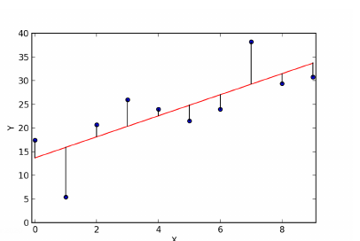
Ridge regression#
L’idée : c’est OLS + une pénalité qui empêche les coefficients de devenir trop grands. Cette pénalité est la norme \(L_2\) (somme des carrés des coefficients).
L’hyperparamètre \(\alpha\) contrôle la force de la régularisation : plus il est grand, plus les coefficients sont écrasés vers 0.
À quoi ça sert ?
Corriger la multicolinéarité : si deux features sont très corrélées (par exemple
x_i = 2 x_j + 3 x_k), OLS devient instable (il peut donner n’importe quoi). Ridge lisse ça.Limiter la complexité du modèle pour éviter le surapprentissage (overfitting).
⚠️ Piège classique : la régularisation s’applique uniformément à tous les coefficients, quelle que soit l”échelle des variables. Si une feature est en € (0 à 500 000) et une autre en m² (20 à 200), la pénalité va frapper beaucoup plus fort la variable en m² (dont les coefficients seront numériquement plus grands). Solution : toujours normaliser les données (
StandardScaler) avant d’utiliser Ridge, Lasso ou ElasticNet.
Lasso#
L’idée : comme Ridge, mais avec une pénalité \(L_1\) (somme des valeurs absolues des coefficients) au lieu de \(L_2\).
Propriété remarquable : Lasso a tendance à mettre exactement à 0 certains coefficients — pas juste les rendre petits, les annuler complètement. Résultat : le modèle final n’utilise que les features les plus importantes.
À quoi ça sert ?
Sélection automatique de features : les features inutiles sont éliminées. Parfait quand on a des centaines de variables et qu’on ne sait pas lesquelles comptent.
Explicabilité : un modèle avec 5 features utilisées est bien plus facile à expliquer qu’un modèle avec 500.
Aparté — pourquoi parle-t-on de \(L_1\) et \(L_2\) ?#
Ces noms reviennent partout en machine learning (Ridge, Lasso, SVM, régression logistique régularisée, dropout en deep learning…). Ils ne sont pas arbitraires — ils renvoient à deux façons mathématiques de mesurer la taille d’un vecteur de coefficients.
Les normes \(L_p\) en une phrase#
En maths, il existe plusieurs manières de mesurer la « taille » d’un vecteur \((a_1, a_2, \dots, a_n)\). On les appelle des normes, et elles portent le nom \(L_p\) :
Norme \(L_1\) (dite Manhattan ou taxicab) :
→ c’est la somme des valeurs absolues des coefficients.
Norme \(L_2\) (dite euclidienne) :
→ c’est la racine de la somme des carrés. C’est la distance classique « à vol d’oiseau ».
L’analogie à garder en tête — Manhattan vs vol d’oiseau : imagine deux points sur une carte de Manhattan. La distance \(L_2\) (vol d’oiseau) est la ligne droite entre eux. La distance \(L_1\) est celle que parcourt un taxi qui ne peut se déplacer qu’horizontalement ou verticalement le long des rues. Les deux mesurent « une taille », mais pas de la même façon — et cette différence change tout.
Pourquoi on les utilise pour régulariser#
Régulariser, c’est pénaliser les gros coefficients dans la fonction de coût pour empêcher le surapprentissage :
Il reste à choisir comment mesurer cette taille :
Avec la norme \(L_2\) → on obtient Ridge (pénalité = \(\sum a_j^2\)).
Avec la norme \(L_1\) → on obtient Lasso (pénalité = \(\sum |a_j|\)).
Avec un mélange des deux → ElasticNet.
Pourquoi les comportements sont si différents#
C’est ici que ça devient vraiment intéressant. Les deux normes se ressemblent, mais elles poussent les coefficients vers 0 de manière radicalement différente :
\(L_2\) (Ridge) — « écrase tout proportionnellement »
La pénalité \(a^2\) est douce près de 0 : passer un coefficient de 0,1 à exactement 0 fait gagner seulement \(0{,}01\) — quasi rien. Du coup, Ridge réduit tous les coefficients mais ne les met jamais exactement à 0. Tous les coefficients restent petits mais non nuls.
\(L_1\) (Lasso) — « tue certains et garde les autres »
La pénalité \(|a|\) est linéaire : passer un coefficient de 0,1 à 0 fait gagner pile 0,1 — autant que passer de 1 à 0,9. L’optimisation a donc une vraie incitation à mettre exactement à 0 les coefficients peu utiles. Résultat : Lasso fait de la sélection automatique de features — certaines variables disparaissent complètement du modèle.
Image mentale : Ridge aplatit une colline — tout devient plus petit, mais rien ne disparaît. Lasso creuse des vallées — certains coefficients tombent à zéro et n’en remontent plus.
Tableau de décision rapide#
Situation |
À choisir |
|---|---|
Beaucoup de features, toutes potentiellement utiles |
Ridge (\(L_2\)) |
Beaucoup de features, on veut en éliminer automatiquement |
Lasso (\(L_1\)) |
Multicolinéarité forte entre variables |
Ridge (plus stable) |
Explicabilité prioritaire (« quelles variables comptent ? ») |
Lasso |
Compromis entre les deux |
ElasticNet |
🎯 Ce qu’il faut retenir : les noms \(L_1\) et \(L_2\) ne sont pas un jargon arbitraire. Ils renvoient à deux manières mathématiques distinctes de mesurer la taille des coefficients, et ce choix change la géométrie du problème d’optimisation — ce qui change fondamentalement le comportement du modèle. La même distinction reviendra plus loin avec les SVM, la régression logistique régularisée, et même le weight decay des réseaux de neurones.
ElasticNet#
L’idée : pourquoi choisir entre Ridge et Lasso quand on peut avoir les deux ? ElasticNet combine les deux pénalités :
Quand l’utiliser ? Quand Lasso semble trop agressif (il supprime des variables qu’on aurait voulu garder) mais que Ridge ne sélectionne pas assez. ElasticNet offre le meilleur des deux mondes.
Régression polynomiale#
L’idée : c’est toujours de la régression linéaire, mais on lui donne en entrée non pas les variables brutes, mais leurs polynômes.
Exemple avec 2 variables et degré 2 :
La régression est linéaire dans ce nouvel espace enrichi, mais elle capture des relations non linéaires dans l’espace d’origine.
Mental model : on « triche » en créant de nouvelles features à partir des anciennes. Le modèle ne change pas, mais il devient capable de tracer des courbes au lieu de droites.
Attention : avec beaucoup de variables et un degré élevé, le nombre de features explose. Avec 10 variables et degré 3 → environ 286 features. C’est vite ingérable et on doit régulariser fort.
Scoring d’une régression#
Comment mesure-t-on la qualité d’une régression ? Revoir le notebook 03-use-sklearn-algorithms/03-evaluate-regression-model qui détaille les métriques MAE, RMSE, R², MAPE. En résumé :
MAE → erreur moyenne dans les unités de la cible, robuste aux outliers.
RMSE → idem mais pénalise plus les grosses erreurs (carré).
R² → quelle fraction de la variance est expliquée par le modèle (entre 0 et 1).
MAPE → pourcentage d’erreur moyen, parlant pour le métier.
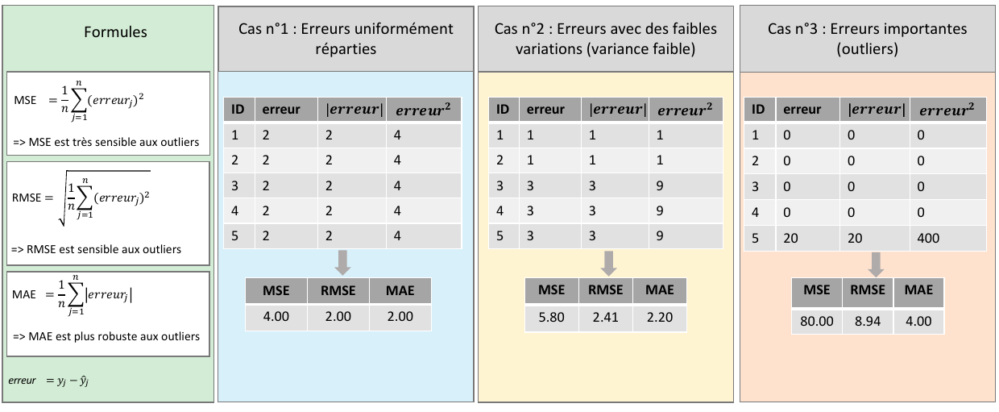
Régression logistique#
L’idée intuitive#
Malgré son nom, c’est un algorithme de classification, pas de régression ! Il prédit la probabilité d’appartenance à une classe (entre 0 et 1). Si la proba est au-dessus d’un seuil (souvent 0,5), on décide « c’est la classe positive ».
L’analogie : un médecin qui regarde les résultats d’analyses d’un patient et dit « il y a 80% de chances que vous ayez cette maladie ». C’est une probabilité, pas une réponse binaire. La décision finale (traiter ou pas) dépend d’un seuil qu’on choisit selon les enjeux.
Forces et faiblesses#
✅ Simple, rapide, interprétable (comme la régression linéaire).
✅ Sortie probabiliste : on peut ajuster le seuil de décision pour privilégier précision ou rappel.
✅ Baseline de référence pour la classification binaire — souvent étonnamment compétitive.
⚠️ Sensible aux relations linéaires : si la vraie frontière de décision est courbe, ça patine.
⚠️ Nécessite une certaine quantité de données pour converger proprement.
🔧 Hyperparamètre
C(inverse de la force de régularisation) : plus petit = plus régularisé.
Support Vector Machines (SVM)#
L’idée intuitive#
On cherche la « frontière » qui sépare deux classes en laissant le plus de marge possible de chaque côté.
L’analogie : imagine deux groupes d’élèves dans une cour de récré. Tu veux tracer une ligne au milieu pour les séparer. Mais il y a plein de lignes possibles. Le SVM choisit celle qui passe le plus loin possible des élèves les plus proches, de chaque côté. Plus la « rue » entre les deux groupes est large, plus la séparation est robuste (un nouvel élève tombera probablement du bon côté).

Les points les plus proches de la frontière s’appellent les vecteurs support — ce sont eux qui définissent la séparation. Les autres points, plus loin, n’ont aucune influence.
Forces et faiblesses#
✅ Efficace dans les espaces très multidimensionnels (beaucoup de features).
✅ Fonctionne même si le nombre de données est inférieur au nombre de dimensions — rare parmi les algorithmes.
✅ Utilise peu de mémoire (il ne retient que les vecteurs support).
✅ Régularisable via l’hyperparamètre
C.⚠️ Très sensible à l’échelle → toujours normaliser les données.
⚠️ Ne produit pas de probabilités par défaut (il faut passer par
probability=Truequi fait un calibrage à part).⚠️ Lent sur de gros datasets (> quelques dizaines de milliers d’exemples).
L’astuce du kernel#
Problème : en pratique, les données sont rarement linéairement séparables. Une droite ne suffit pas, il faut une courbe.
Solution : projeter les données dans un espace de dimension supérieure où une séparation linéaire redevient possible, puis retraduire cette séparation dans l’espace d’origine.
L’analogie : imagine des points disposés en cercles concentriques sur une feuille de papier. Impossible de les séparer avec une ligne droite. Mais si tu « soulèves » le cercle intérieur en 3D (en ajoutant une dimension \(z = x^2 + y^2\)), tu peux maintenant séparer les deux groupes avec un plan horizontal. C’est exactement le principe du kernel.
Kernel polynomial#
Projette les données dans un espace où les séparations sont des polynômes (paraboles, cubiques…). Utile pour des frontières courbes simples.
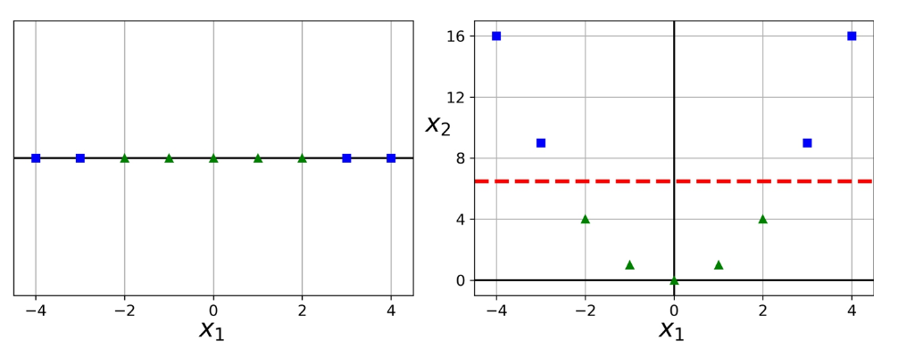
Kernel gaussien (RBF)#
Le plus utilisé en pratique. Il place une « cloche gaussienne » autour de chaque point et mesure les proximités — ce qui permet de créer des frontières très flexibles capables de suivre n’importe quelle forme.
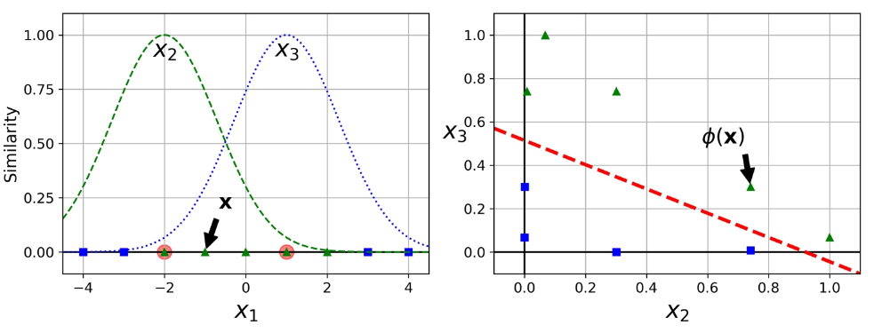
En pratique, les algorithmes utilisent le kernel trick : ils calculent directement les similarités dans l’espace projeté, sans jamais construire l’espace explicitement. C’est ce qui rend les SVM à kernel calculables même dans des espaces de dimension infinie.
Naive Bayes#
L’idée intuitive#
Naive Bayes applique le théorème de Bayes à la classification, en faisant une hypothèse naïve : toutes les features sont indépendantes les unes des autres.
L’analogie : tu reçois un email. Naive Bayes se demande « si cet email est un spam, quelle est la probabilité qu’il contienne les mots qu’il contient ? » et « si ce n’est pas un spam, quelle est cette probabilité ? ». Il choisit la classe qui rend l’email le plus « probable ». L’hypothèse naïve, c’est de supposer que la présence du mot « offre » est indépendante de la présence du mot « viagra » — ce qui est faux en réalité, mais ça marche étonnamment bien quand même.
Forces et faiblesses#
✅ Très rapide à entraîner et à prédire (il ne fait que compter et multiplier).
✅ Efficace avec peu de données d’apprentissage.
✅ Utilisé historiquement pour la classification de texte (filtres anti-spam, analyse de sentiment, classification de news) — c’est là qu’il brille.
⚠️ L’hypothèse d’indépendance est rarement vraie → dégrade les estimations de probabilité, mais souvent pas les décisions finales.
⚠️ Moins performant que les méthodes modernes (boosting, deep learning) sur la plupart des problèmes hors texte.
Exemple : classification de texte par sac de mots#
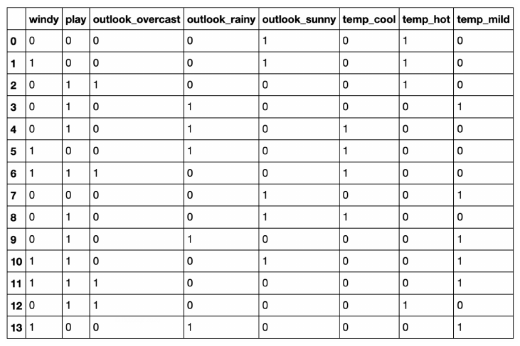
Chaque document est représenté par la fréquence des mots qu’il contient, et Naive Bayes calcule pour chaque classe (ex : spam / pas spam) la probabilité d’observer ces fréquences.
K-Nearest Neighbors (K-NN)#
L’idée intuitive#
Pour classer un nouveau point, on regarde qui sont ses \(k\) plus proches voisins et on prend la classe majoritaire parmi eux. C’est aussi simple que ça.
L’analogie : dans une nouvelle école, comment deviner si un élève inconnu est en terminale S ou ES ? Regarde avec qui il traîne. Si ses 5 meilleurs copains sont tous en S, il est probablement en S aussi. C’est l’idée du K-NN.
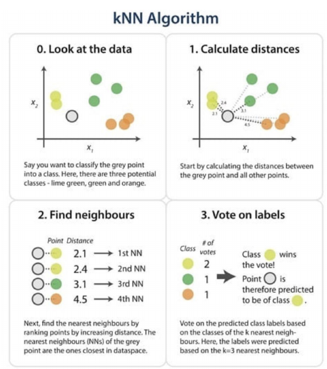
\(k\) est un hyperparamètre crucial :
Petit \(k\) (par exemple 1) → très sensible au bruit, risque de surapprentissage.
Grand \(k\) → décisions plus lisses mais risque de « moyenner » trop et de rater les subtilités.
Typiquement, on choisit \(k\) impair en classification binaire pour éviter les égalités.
Pour la régression, on prend la moyenne (ou la médiane) des valeurs des \(k\) voisins.
Forces et faiblesses#
✅ Principe simplissime, facile à expliquer.
✅ Pas de phase d’apprentissage explicite — c’est un algorithme « basé sur les instances ». On garde toutes les données d’entraînement en mémoire et on les consulte au moment de la prédiction.
✅ Prise en compte immédiate des nouvelles données (juste les ajouter au dataset).
⚠️ Prédiction lente : chaque nouvelle prédiction nécessite de calculer les distances à tous les points d’entraînement.
⚠️ Très sensible à l’échelle → normaliser obligatoirement.
⚠️ Souffre de la curse of dimensionality : en dimensions élevées (>50), toutes les distances deviennent similaires, et la notion de « voisin proche » perd son sens.
À retenir : K-NN est un excellent algorithme de démo, mais en production on lui préfère presque toujours des alternatives plus rapides et plus robustes (arbres, boosting).
K-Means#
L’idée intuitive#
K-Means est un algorithme de clustering : non pas classer des points dans des catégories connues, mais découvrir des regroupements naturels dans les données (apprentissage non supervisé).
L’analogie : imagine que tu arrives dans un grand parc avec plein de groupes de gens. Tu ne sais pas qui appartient à quel groupe (il n’y a pas d’étiquette), mais visuellement, tu vois qu’il y a trois grappes distinctes. K-Means fait la même chose : il cherche \(k\) groupes en minimisant la distance entre chaque point et le centre de son groupe.
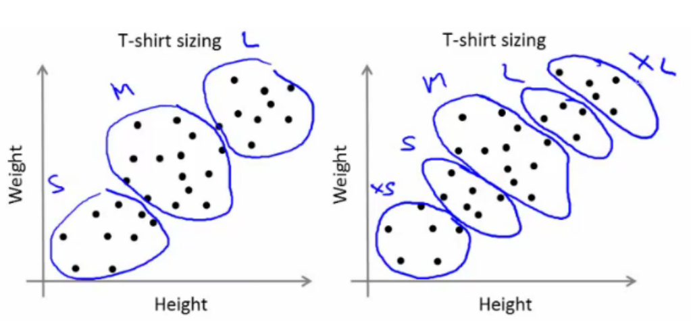
Fonctionnement (simplifié)#
On choisit \(k\) (nombre de clusters souhaités) — c’est un hyperparamètre critique.
On place \(k\) centres au hasard.
Chaque point rejoint le cluster dont le centre est le plus proche.
On recalcule la position des centres comme la moyenne des points du cluster.
On répète jusqu’à ce que les centres ne bougent plus.
Forces et faiblesses#
✅ Simple et interprétable : chaque cluster a un centre (« point moyen ») qu’on peut regarder.
✅ Rapide et scalable à de gros datasets.
⚠️ Il faut fixer \(k\) à l’avance — pas toujours évident (on utilise des heuristiques comme la méthode du coude ou le silhouette score).
⚠️ S’appuie sur la notion de distance → toujours normaliser les données.
⚠️ Ne trouve que des clusters « sphériques » autour d’un centre. Pour des formes allongées ou non convexes, ça échoue.
⚠️ Sensible à l’initialisation : deux runs avec des points de départ différents peuvent donner des clusters différents. Le paramètre
n_init=10(par défaut) relance plusieurs fois et garde le meilleur.
DBScan#
L’idée intuitive#
DBScan cherche des « zones denses » de points et les regroupe en clusters. Les points isolés (pas dans une zone dense) sont étiquetés comme outliers.
L’analogie : tu regardes un ciel étoilé. Certaines zones sont très denses (galaxies, amas stellaires), d’autres très éparses. DBScan fait la même chose : il considère qu’un cluster est une zone où les points sont nombreux et proches les uns des autres.
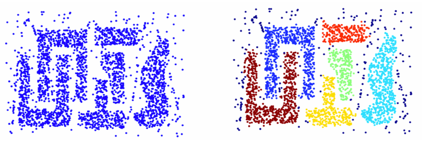
Différences clés avec K-Means#
✅ Pas besoin de fixer le nombre de clusters à l’avance — DBScan le découvre lui-même.
✅ Trouve des clusters de forme arbitraire (pas seulement sphériques).
✅ Détecte les outliers en tant que points « hors cluster ».
⚠️ Hyperparamètres
epsetmin_samplesà régler, pas toujours facile.⚠️ Moins efficace en haute dimension (même souci que K-NN : les distances deviennent peu informatives).
Les algorithmes d’ensemble#
L’idée intuitive#
Un ensemble combine plusieurs modèles (« apprenants faibles ») pour en faire un seul modèle fort. C’est le « sagesse des foules » appliqué au ML.
L’analogie : tu demandes conseil à 10 médecins différents pour un diagnostic. Chacun peut se tromper un peu, mais si on fait voter les 10, le diagnostic majoritaire est généralement plus fiable que celui d’un seul. C’est exactement ce que font les algorithmes d’ensemble — avec des « médecins » qui sont en fait des petits arbres de décision.
Trois grandes familles : bagging, boosting, et stacking.
Bagging#
L’idée : entraîner plusieurs modèles en parallèle, chacun sur un sous-échantillon différent des données (tiré avec remise). On combine ensuite leurs prédictions :
Moyenne pour la régression.
Vote majoritaire pour la classification.
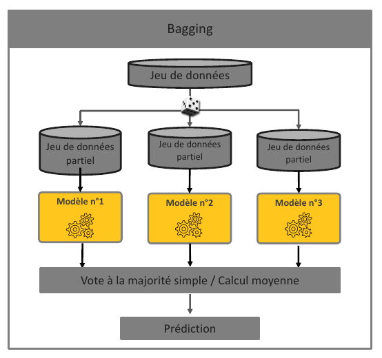
Pourquoi ça marche ? Chaque modèle pris isolément fait des erreurs, mais pas les mêmes erreurs (parce qu’ils sont entraînés sur des données différentes). En moyennant, les erreurs se compensent et le résultat final est plus stable (variance réduite).
Exemple star : Random Forest — une forêt d’arbres de décision où chaque arbre est entraîné sur un sous-échantillon et sur un sous-ensemble aléatoire de features. Robuste, peu sensible aux outliers, peu de tuning nécessaire.
Boosting#
L’idée : entraîner les modèles séquentiellement, chacun essayant de corriger les erreurs du précédent.
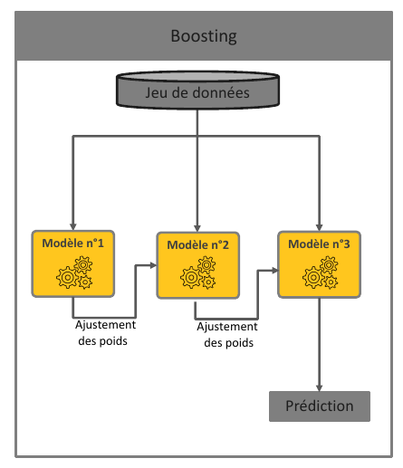
Mental model : chaque nouveau modèle est un « spécialiste » des cas où les modèles précédents se trompent. On les empile comme des couches et on obtient un modèle final redoutable.
Exemple star : XGBoost (aussi LightGBM, CatBoost) — des implémentations optimisées du gradient boosting qui dominent la plupart des compétitions Kaggle sur données tabulaires.
🎯 À retenir : si tu as un problème de prédiction sur des données tabulaires et que tu ne sais pas quoi essayer, commence par XGBoost / LightGBM. C’est presque toujours dans le top 3 des approches, et souvent l’état de l’art.
Stacking#
L’idée : entraîner plusieurs modèles différents (par exemple une régression logistique, un SVM, un Random Forest, un XGBoost) puis entraîner un méta-modèle qui apprend à combiner leurs prédictions intelligemment.
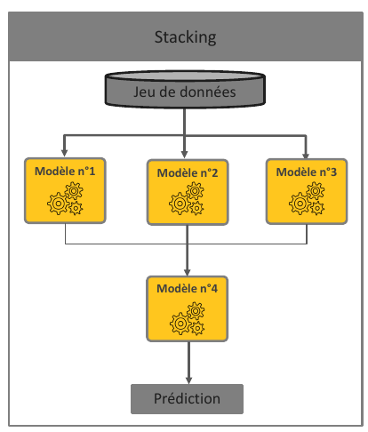
Mental model : le méta-modèle apprend « sur quels cas dois-je faire confiance à la régression logistique plutôt qu’au Random Forest ? ». C’est une combinaison plus sophistiquée que le simple vote ou la moyenne — et souvent plus performante, au prix d’un coût de calcul bien plus élevé.
Quand l’utiliser ? Quand on a besoin d’arracher les derniers pourcents de performance et que le coût calcul n’est pas un problème (typiquement, compétitions ML).
🎯 Pour résumer — choisir son algorithme#
Le tableau de synthèse#
Algorithme |
Type |
Forces |
Faiblesses |
Cas d’usage typique |
|---|---|---|---|---|
Régression linéaire |
Régression |
Simple, interprétable, rapide |
Relations linéaires uniquement |
Baseline, explicabilité forte |
Régression logistique |
Classification |
Simple, probabiliste |
Linéaire |
Baseline classification |
Ridge / Lasso / ElasticNet |
Régression |
Régularisation, sélection de features |
Linéaire |
Jeux de données avec multicolinéarité |
SVM |
Classif/Régr |
Efficace en haute dim, kernel trick |
Lent sur gros datasets, pas de probas |
Texte, image de taille modérée |
Naive Bayes |
Classification |
Très rapide, peu de données |
Hypothèse d’indépendance |
Filtres anti-spam, classification texte |
K-NN |
Les deux |
Simple, prise en compte immédiate |
Prédiction lente, curse of dim |
Démo pédagogique, petits datasets |
K-Means |
Clustering |
Simple, rapide |
\(k\) à fixer, clusters sphériques |
Segmentation client |
DBScan |
Clustering |
Pas de \(k\), formes quelconques |
Haute dim, hyperparamètres |
Détection d’anomalies spatiales |
Random Forest |
Les deux |
Robuste, peu de tuning |
Modèle lourd, moins interprétable |
Baseline moderne sur tabulaire |
XGBoost / LightGBM |
Les deux |
État de l’art tabulaire |
Tuning délicat, complexe |
Production sur données tabulaires |
Stacking |
Les deux |
Gain ultime de performance |
Très coûteux, complexe |
Compétitions |
La règle empirique « par quoi commencer ? »#
Problème tabulaire classique ? → Commence par Random Forest (baseline rapide) puis passe à XGBoost / LightGBM. C’est presque toujours dans le top 3.
Tu veux de l’interprétabilité ? → Régression logistique / linéaire ou un arbre de décision simple.
Texte ? → Naive Bayes pour une baseline rapide, puis embeddings + modèles classiques, puis transformers (deep learning).
Images ? → Sors de ce chapitre, tu es dans le territoire du deep learning (CNN, vision transformers).
Clustering / segmentation ? → K-Means d’abord, DBScan si les clusters ne sont pas sphériques ou si tu veux détecter les outliers.
Dataset très petit (< 1000 lignes) ? → Préfère les modèles simples (régression, Naive Bayes, SVM) — les modèles complexes vont overfitter.
Dataset très gros (> millions de lignes) ? → LightGBM (optimisé pour) ou modèles linéaires (rapides).
Le mot de la fin#
Il n’y a pas d’algorithme universellement meilleur — c’est le No Free Lunch Theorem en ML. Ce qui compte, c’est de savoir quelles questions poser à tes données et quel outil correspond à ces questions. Un data scientist expérimenté ne connaît pas forcément les détails internes de 50 algorithmes — il sait lesquels essayer en premier selon la nature du problème, et il sait lire ses résultats pour décider quoi essayer ensuite.
Les deux algorithmes qui couvrent 80% des besoins en data science tabulaire aujourd’hui sont la régression logistique (pour la baseline interprétable) et XGBoost / LightGBM (pour la performance). Les autres sont là pour les cas particuliers.
Aides-mémoire visuels#
Cheatsheet scikit-learn (choix d’algorithme) — un arbre de décision officiel pour choisir son algo.
Cheatsheets Datacamp — collection de fiches synthétiques.
{kind=link}
Comment ça marche ?#
En interne, c’est une régression linéaire dont la sortie passe dans une fonction sigmoïde qui écrase les valeurs entre 0 et 1 :
Cette transformation garantit que la sortie est toujours interprétable comme une probabilité.